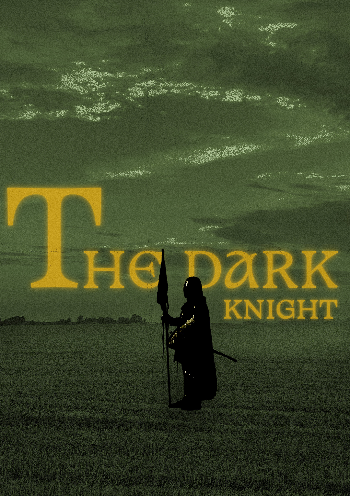
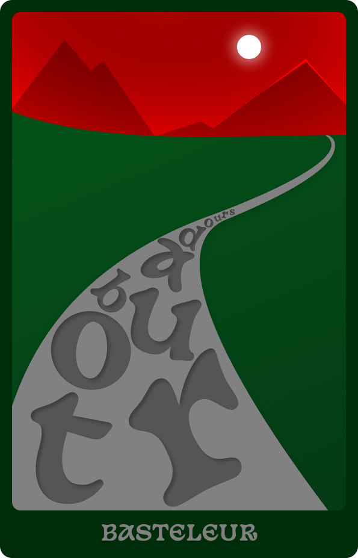
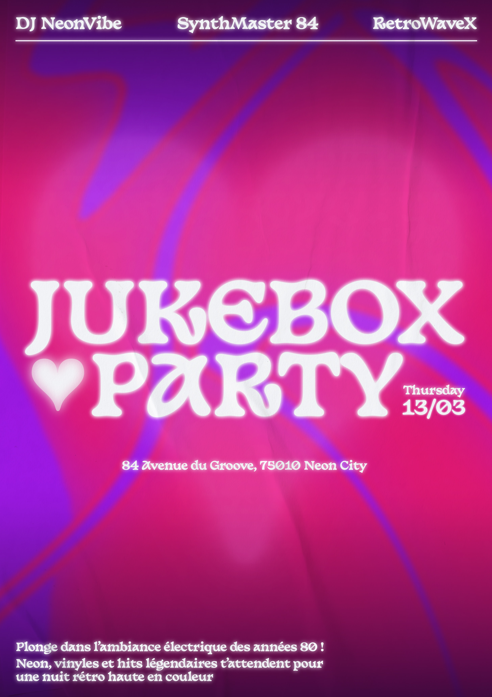
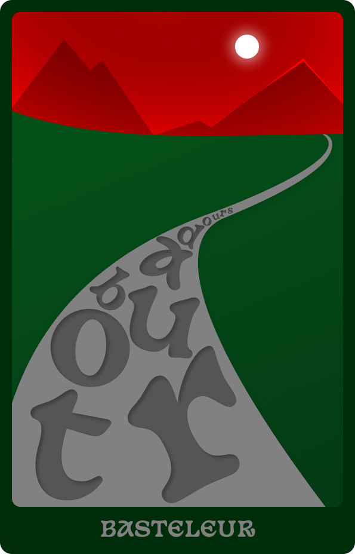
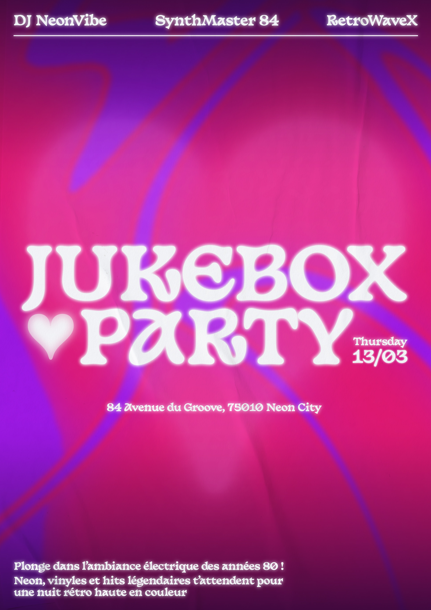
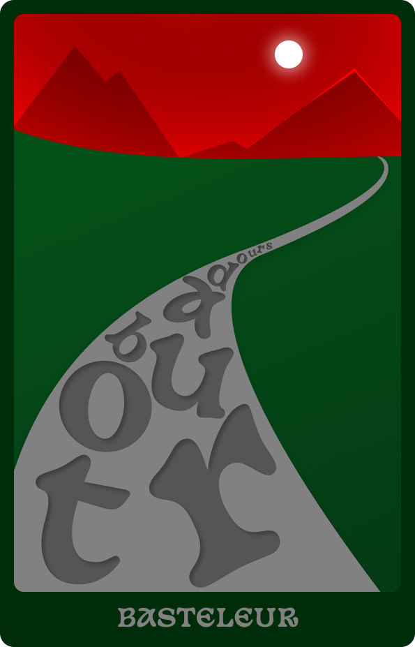
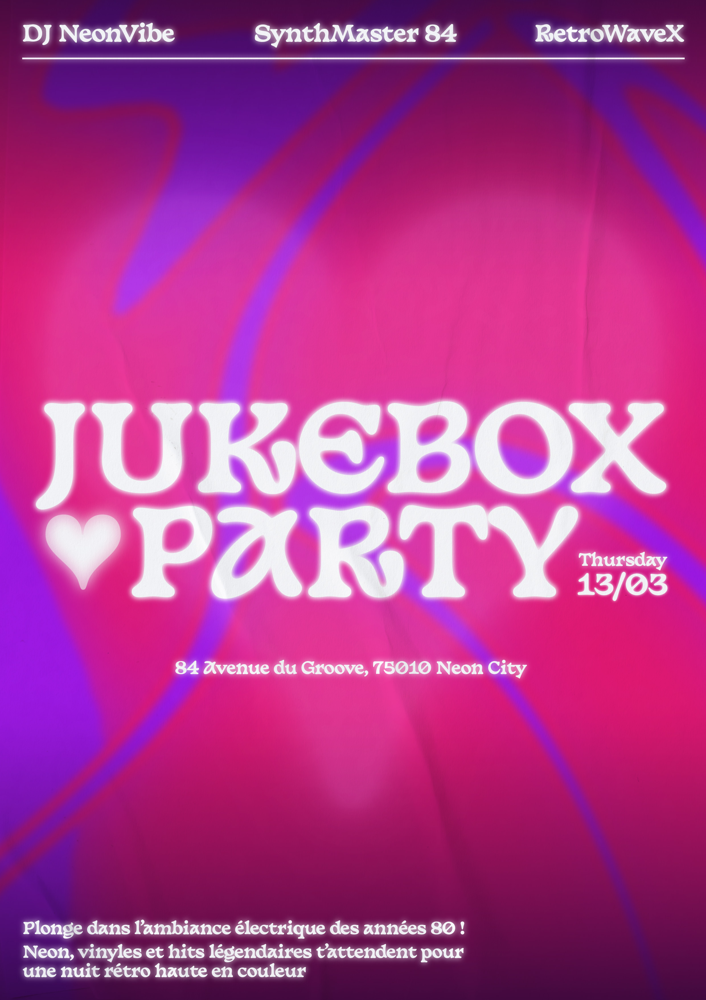
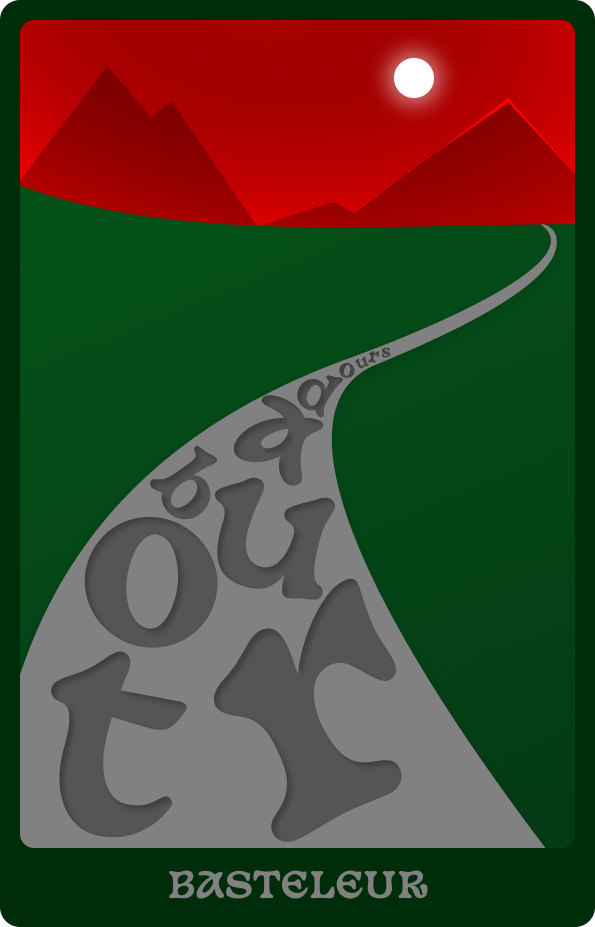
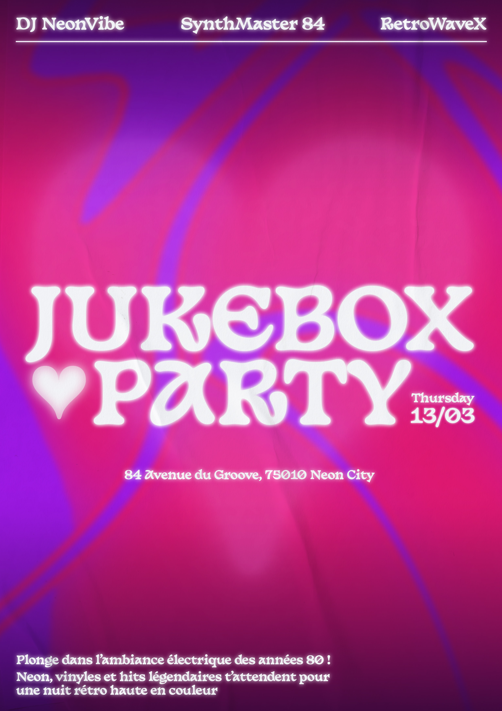

 





AaBbCcDdEeFfGgHhIiJjKkLlMmOoPpQq
AaBbCcDdEeFfGgHhIiJjKkLlMmOoPpQq
Inspirations
Je suis Basteleur Moonlight, une typographie qui danse entre ombre et lumière, fusionnant mysticisme et formes ancestrales. Née en 2022 sous la main du studio Keussel, mon essence puise dans le Tarot de Marseille, où le Bateleur incarne transformation et illusion.
Mes lettres portent l’héritage des gothiques et des capitales romaines, équilibrant tradition et modernité à travers l’influence des Elzévirs du XVIe siècle. Mon écriture vibre, jamais figée. Pances inclinées, traits irréguliers, je défie la rigidité, oscillant entre équilibre et mouvement.
Sculptée avec soin, chaque lettre est une incantation visuelle. Artisanale, imprévisible, imprégnée de brisures subtiles et de détails cachés, je suis une écriture qui insuffle une âme, une magie propre.
Carateristiques
Voyez ma silhouette ! Mes courbes sont chaleureuses, mes détails ciselés comme la pierre d’une cathédrale.
Inspirée de la Cooper Black, mes formes généreuses et arrondies offrent une grande lisibilité et une chaleur visuelle, tout en restant audacieuses et imposantes.
Mon influence médiévale est marquée par des lettres légèrement irrégulières, comme façonnées à la main. Le contraste fort entre pleins et déliés, plus marqué que chez ma sœur Moonlight, sculpte mes lettres et donne du relief aux mots.
Certains caractères, comme le m, le Y et le R, semblent se liquéfier, oscillant entre le solide et l’évanescent. Des détails aiguisés ajoutent une touche rigoureuse à mon design fluide.
Usages
Quand une écriture puissante et envoûtante est requise, je réponds à l’appel !
Faites-moi danser dans des titres flamboyants, où je capte l’œil comme un héraut sur la place du marché.
Je brillerai sur des blasons graphiques, des identités visuelles pleines de panache et de caractère.
Je brillerai sur des blasons graphiques, des identités visuelles pleines de panache et de caractère.
Je m’épanouirai sur des affiches d’aventure et de mystère, m’intégrant aux légendes et aux récits.
Size
94
px
Letter Spacing
94
px
Line Height
1.2
%
Je suis un texte incroyable qui permet de lire la super font Basteleur
Je suis Basteleur Bold, une écriture façonnée entre mystère et lumière, entre charme ancien et modernité éclatante. Mon créateur, Francis Chouquet, maître en lettrage, m’a donné vie en 2022, inspiré par les grands glyphes d’antan et les signes ésotériques du Tarot de Marseille. À travers moi, il a cherché à capturer l’essence du mystique et du tangible, une typographie qui évoque autant la tradition que l’audace contemporaine.
Mais que suis-je vraiment ? Je suis un mélange subtil, une potion typographique où se rencontrent les formes rondes et accueillantes de la Cooper Black, connue pour sa douceur et son impact, et les lettres taillées de l’ancien temps, issues des manuscrits médiévaux, où l’irrégularité était une richesse. Une alliance entre tradition et modernité, entre force et délicatesse.
Mon style puise dans les lettres gothiques et les capitales romaines, alliant rigidité médiévale et équilibre classique. Mon appartenance aux Elzévirs, famille typographique du XVIe siècle, scelle mon lien entre tradition et renouveau.
Geometric counters
The counters (inner forms) are also based on geometric rules and most counters can be mirrored on at least one axis.
A

